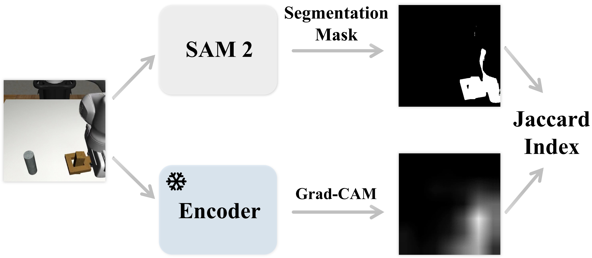
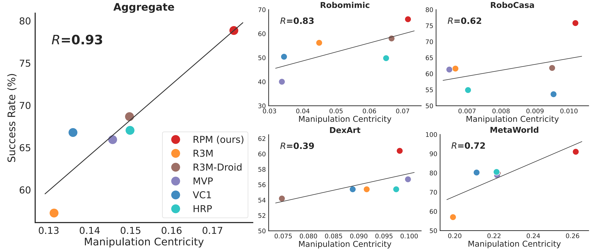

Manipulation Centricity of Representations
When using Grad-CAM to analyze the captured features of existing representations, we observe that a representation’s downstream task performance appears to correlate with its ability to capture manipulation-relevant regions.
To quantify this metric, we compute the similarity between the regions highlighted by Grad-CAM and the ground truth regions corresponding to the end-effector and task-relevant objects generated by SAM2.

Measurement of manipulation centricity
Key findings
A strong correlation between manipulation centricity and downstream task performance exists, with a Pearson correlation coefficient of $R=0.93$.

Correlation between Success rate and Manipulation centricity